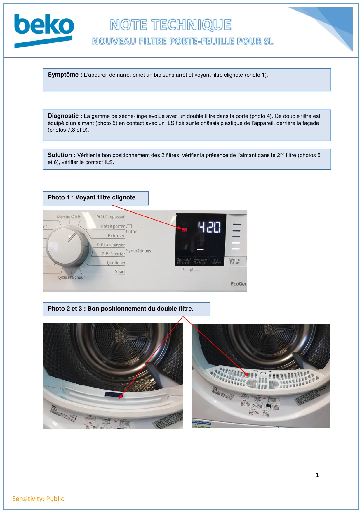
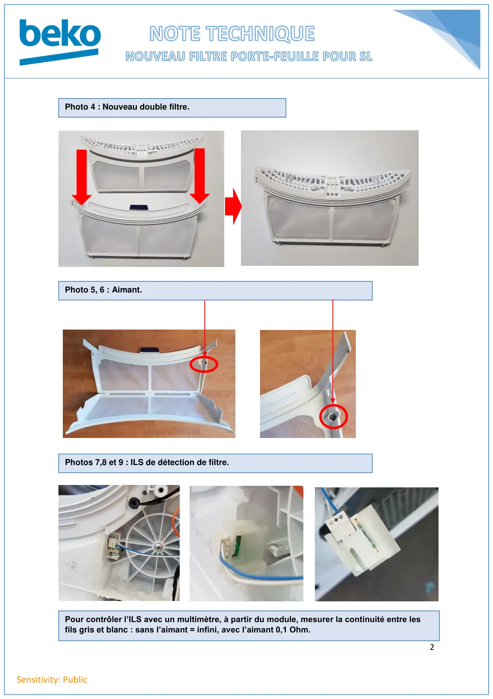

Nouveau filtre porte-feuille

1Sensitivity: PublicSymptôme : L’appareil démarre, émet un bip sans arrêt et voyant filtre clignote (photo 1).Diagnostic : La gamme de sèche-linge évolue avec un double filtre dans la porte (photo 4). Ce double filtre estéquipé d’un aimant (photo 5) en contact avec un ILS fixé sur le châssis plastique de l’appareil, derrière la façade(photos 7,8 et 9).Solution : Vérifier le bon positionnement des 2 filtres, vérifier la présence de l’aimant dans le 2nd filtre (photos 5et 6), vérifier le contact ILS.Photo 1 : Voyant filtre clignote.Photo 2 et 3 : Bon positionnement du double filtre.li
1 / 2
2Sensitivity: PublicPhoto 4 : Nouveau double filtre.Photo 5, 6 : Aimant.Photos 7,8 et 9 : ILS de détection de filtre.Pour contrôler l’ILS avec un multimètre, à partir du module, mesurer la continuité entre lesfils gris et blanc : sans l’aimant = infini, avec l’aimant 0,1 Ohm.
2 / 2